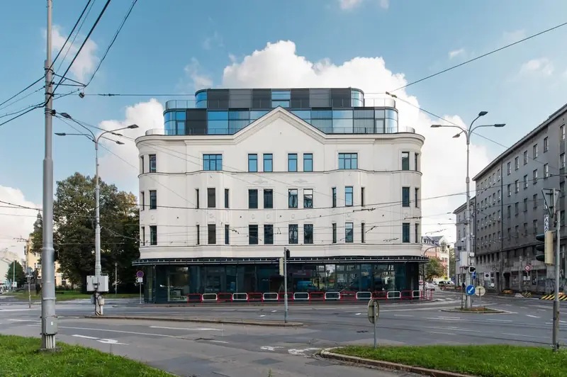
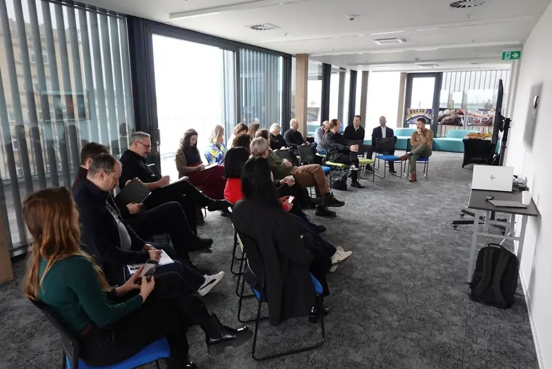
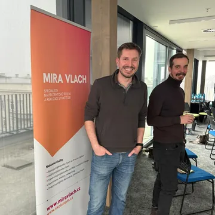

Strategický bootcamp
Máte cíl, který čeká? Vytvoříme podmínky, aby se stal skutečností.
4 až 12 týdnů strukturovaného prostředí pro lidi, kteří vědí, co chtějí – a potřebují prostor to konečně dotáhnout. Jeden cíl. Plná soustředěnost. Reálný výsledek.
Zjistit detaily programuNebo se mi rovnou ozvěte na LinkedIn.
Pro koho
Je bootcamp pro vás?
Bootcamp JE pro vás, pokud:
- Máte v hlavě projekt, který by vás výrazně posunul, ale v běžném provozu se k němu nedostanete.
- Víte, co chcete. Chybí vám jen čas, klid a struktura to realizovat.
- Dáváte přednost výsledkům před plánováním výsledků.
- Chcete pracovat vedle lidí, kteří to myslí vážně.
- Jste ochotni nést odpovědnost za vlastní cíl – bez výmluv.
Bootcamp pravděpodobně NENÍ pro vás, pokud:
- Hledáte kurz nebo školení, které vás naučí, co dělat.
- Nemáte jasno, jakým směrem se chcete posunout.
- Potřebujete nejprve vyřešit jiné priority.
A to je v pořádku – rádi vás nasměrujeme jinam.
Jak to funguje
Od přihlášky k výsledku
Neslibujeme, že svého cíle dosáhnete. Slibujeme, že vytvoříme ty nejlepší podmínky, jaké umíme – a pak záleží na vás.
Přihlaste se
Vyplníte krátký formulář a probereme spolu váš záměr i detaily programu.
Vyberte si cíl
Jeden konkrétní, přiměřený cíl, jehož dokončení vás výrazně posune.
Pracujte s podporou
V coworku Hygge Ostrava, hybridně nebo remote – zaměření na výsledek.
Oslavte výsledek
Na konci programu představíte odpracovaný posun ostatním účastníkům.
Co získáte
- Strukturu, která drží tempo (ale nežene vás)
- Komunitu lidí, kteří pracují na svých cílech vedle vás
- Přístup k mentorům a expertům z poradního sboru, když je potřebujete
- Klid na práci v coworku Hygge Ostrava – nebo kdekoli jinde
- Zahájení a zakončení, které se počítají
S čím můžete přijít
Příklady cílů pro bootcamp
Hlásíte se s jedním významným cílem. Měl by být splnitelný v daném čase, výrazně vás posunout a měli byste pro něj mít přiměřené podmínky.
Termíny
Nejbližší běhy
Online varianta
30. 9. – 27. 10. 2026
4. běh · 4 týdny
Online varianta
18. 11. – 16. 12. 2026
5. běh · 4 týdny
V pilotních bězích si cenu za účast navrhujete sami – podle hodnoty cíle a svých možností. Stav ke 14. 9. 2026, aktuální termíny najdete na strategickybootcamp.cz.
Ohlasy
Co říkají účastníci
Přišel jsem s hrubou ideou. Odcházel jsem s prvními třemi platícími zákazníky a jasnou hlavou na další tři měsíce.
Nejtěžší byl třetí týden. Pak se něco zlomilo a já pochopil, proč jsem tam byl.
Nečekal jsem, že mi tolik dá samotná komunita. Pracovat vedle lidí, kteří to myslí vážně, je nakažlivé.

Kdo za tím stojí
Organizátor a poradní sbor

Mira Vlach
Hlavní organizátor
Hlavním posláním programu je vytvářet lidem co nejpříznivější prostředí k realizaci jejich cílů. Většina z nás může zářit o to silněji, když si vytvoříme vhodné podmínky.
- Radka Legerská – marketing, LinkedIn, AI
- Martin Čajka, 3ADVOKÁTI – právo
- Na stejné lodi – daně a účetnictví
- Marek Grynhoff – produktový vývoj
- Petr Mohyla – marketingová strategie
- Magda Pátková – koučování
- Martin Chmela, Maronext – AI, vibecoding
- Jarka Kořená – Gallup silné stránky
- Barbora Lubojacká, Symphera – change management
- Jiří Pudich, Premium Systems – business continuity
Nečekejte na ideální podmínky. Vytvořte si je.
Přijímáme účastníky do pilotních běhů – v coworku, hybridně nebo online.
Zjistit detaily programuChcete se nejdřív poradit? Ozvěte se mi na LinkedIn nebo napište na mv@miravlach.cz.